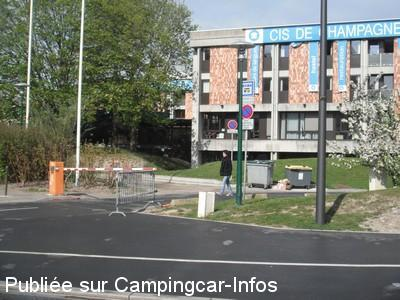
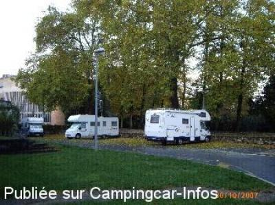
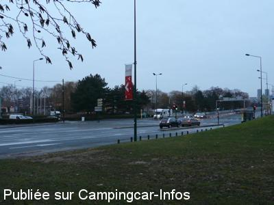
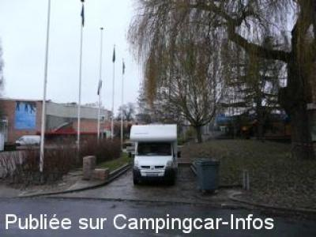

ASN = Aire de services avec stationnement nuit possible de :
REIMS
(N° 801)
Accès/adresse :
Allée Polonceau
Parking du Centre International de Séjour
51100 REIMS
Parking du Centre International de Séjour
51100 REIMS
Latitude : (Nord) 49.24884° Décimaux ou 49° 14′ 55′′
Longitude : (Est) 4.02113° Décimaux ou 4° 1′ 16′′
Tarif : Gratuit
Type de borne : Autre
Services :


Autres informations :
Aire clôturée
Stationnement limité, 48 h
Barrière d'accès avec un code à retirer au Centre International de Séjour entre 8h à 22h

Le 01/05/2012 par JTWebb

Le 15/01/2008 par jaak de Muelenaere

Le 04/01/2008 par PhilR

Le 04/01/2008 par PhilR
de
Philhonfleur
le 27/09/2015 :
Évidemment, ce n'est pas très grand. Mais si on a la chance de trouver de la place, on est bien placé pour visiter Reims. Et c'est plutôt calme. Exception : les soirs de match, où il vaut mieux passer son chemin...
Évidemment, ce n'est pas très grand. Mais si on a la chance de trouver de la place, on est bien placé pour visiter Reims. Et c'est plutôt calme. Exception : les soirs de match, où il vaut mieux passer son chemin...
de
philr
le 20/08/2014 :
Passages réguliers depuis +10 ans... RIEN NE CHANGE... Nafit de Reims avec parents, famille et amis ici. Autos sur places "réservées" (marqué au sol en gros!) ou juste devant empêchant toutes manoeuvres... ou sur la dalle de vidanges ! Il y a 8-10 ans, l'aire devait être déplacée... RdV dans 10 ans ;-)
Passages réguliers depuis +10 ans... RIEN NE CHANGE... Nafit de Reims avec parents, famille et amis ici. Autos sur places "réservées" (marqué au sol en gros!) ou juste devant empêchant toutes manoeuvres... ou sur la dalle de vidanges ! Il y a 8-10 ans, l'aire devait être déplacée... RdV dans 10 ans ;-)
de
phil
le 18/06/2014 :
Very practical for visiting Reims city centre. Just cross the bridge and keep walking for about 10 minutes!
Very practical for visiting Reims city centre. Just cross the bridge and keep walking for about 10 minutes!
de
Gransir Jean Paul
le 17/04/2014 :
De passage le 14 avril 2014, air super pour visiter la ville mais très proche de l'autoroute donc assez bruyant. Merci à la ville de Reims pour la gratuité.
De passage le 14 avril 2014, air super pour visiter la ville mais très proche de l'autoroute donc assez bruyant. Merci à la ville de Reims pour la gratuité.
de
sergio 11
le 18/11/2013 :
De passage le 06/11/2013
Code à prendre à l'accueil pour ouverture de la barrière.
Les places se trouvent à l'arrière du batiment. Peu de places et pas évident pour les c/c de + de 7m. Il vaut mieux aller voir à pied pour éviter de faire une marche arrière, facile mais 80 m. Un peu bruyant mais idéal pour visiter la ville.
De passage le 06/11/2013
Code à prendre à l'accueil pour ouverture de la barrière.
Les places se trouvent à l'arrière du batiment. Peu de places et pas évident pour les c/c de + de 7m. Il vaut mieux aller voir à pied pour éviter de faire une marche arrière, facile mais 80 m. Un peu bruyant mais idéal pour visiter la ville.
de
mmc
le 17/10/2013 :
passage septembre 2013
Cette aire est en fait le centre international de séjour. Il faut appeler un numéro de téléphone pour avoir le code de la barrière. (que fait-on quand on arrive tard?. L'accès y est difficile pour un long camping car vu l'étroitesse du chemin pour accéder aux places de cc qui sont tout au fond. les places sont toutes petites et c'est situé à au moins 25 mn à pied de la cathédrale. Lors de notre passage, une partie des places était squattée par des jeunes ayant la musique à fond et faisant la fête. Nous avons passé notre chemin. Quand aux services, ils sont impraticables pour un grand camping car à moins de bloquer l'accès à tous pour se garer car juste derrière la barrière en diagonale.
passage septembre 2013
Cette aire est en fait le centre international de séjour. Il faut appeler un numéro de téléphone pour avoir le code de la barrière. (que fait-on quand on arrive tard?. L'accès y est difficile pour un long camping car vu l'étroitesse du chemin pour accéder aux places de cc qui sont tout au fond. les places sont toutes petites et c'est situé à au moins 25 mn à pied de la cathédrale. Lors de notre passage, une partie des places était squattée par des jeunes ayant la musique à fond et faisant la fête. Nous avons passé notre chemin. Quand aux services, ils sont impraticables pour un grand camping car à moins de bloquer l'accès à tous pour se garer car juste derrière la barrière en diagonale.
de
mirol49
le 17/10/2013 :
Complètement d'accord avec le commentaire de mmc. J'ai voulu m'y garer pour visiter la ville et notamment la cathédrale. On m'a laissé rentrer avec un numéro de code pour finalement déboucher sur le parking camping-car qui était complet et galère pour faire demi-tour avec mon CC de 7,40. J'ai eu de la chance de trouver non loin une place de parking le long d'un boulevard. J'ai visité la cathédrale et j'ai fuit.
Complètement d'accord avec le commentaire de mmc. J'ai voulu m'y garer pour visiter la ville et notamment la cathédrale. On m'a laissé rentrer avec un numéro de code pour finalement déboucher sur le parking camping-car qui était complet et galère pour faire demi-tour avec mon CC de 7,40. J'ai eu de la chance de trouver non loin une place de parking le long d'un boulevard. J'ai visité la cathédrale et j'ai fuit.
de
William G.
le 25/07/2013 :
Aire très bien située pour visiter la ville et sa cathédrale. Par contre très buyante du fait de la 4 voies. Avons préférer partir et passer la nuit sur une autre aire.
Aire très bien située pour visiter la ville et sa cathédrale. Par contre très buyante du fait de la 4 voies. Avons préférer partir et passer la nuit sur une autre aire.
de
Michel
le 25/06/2013 :
De passage mi juin nous avons constaté que, si les services se font à l'entrée du site, le stationnement est derrière le bâtiment qu'il faut donc entièrement contourner et ne pas utiliser les premières places rencontrées qui sont réservées aux bus.
De passage mi juin nous avons constaté que, si les services se font à l'entrée du site, le stationnement est derrière le bâtiment qu'il faut donc entièrement contourner et ne pas utiliser les premières places rencontrées qui sont réservées aux bus.
de
Daisy
le 02/05/2013 :
Aire trés pratique pour visiter le centre historique de la ville : une petite marche à pied et nous y voilà !
Deux bémols cependant : environnement bruyant, en raison de la proximité de la voie rapide, et difficulté d'y trouver une place même "hors saison", du fait du nombre limité de places dont certaines, d'ailleurs, sont occupées par des voitures.
Aire trés pratique pour visiter le centre historique de la ville : une petite marche à pied et nous y voilà !
Deux bémols cependant : environnement bruyant, en raison de la proximité de la voie rapide, et difficulté d'y trouver une place même "hors saison", du fait du nombre limité de places dont certaines, d'ailleurs, sont occupées par des voitures.
de
OKCORAL
le 27/07/2012 :
De passage les 26 et 27 juillet 2012. Effectivement pas facile à trouver le TomTom était perdu car travaux sur l'itinéraire. Arriver avant 18h est préférable car il n'y a que 8 places et c'était complet tous les jours. Très bien situé à moins d'1km de la cathédrale et du centre ville. Voie rapide proche assez bruyante en journée. N'ayant besoin ni d'eau ni de vidanger je ne me suis pas demandé où se trouvait cet endroit. En tout cas, je ne l'ai pas aperçu. Y en a t il un seulement?
De passage les 26 et 27 juillet 2012. Effectivement pas facile à trouver le TomTom était perdu car travaux sur l'itinéraire. Arriver avant 18h est préférable car il n'y a que 8 places et c'était complet tous les jours. Très bien situé à moins d'1km de la cathédrale et du centre ville. Voie rapide proche assez bruyante en journée. N'ayant besoin ni d'eau ni de vidanger je ne me suis pas demandé où se trouvait cet endroit. En tout cas, je ne l'ai pas aperçu. Y en a t il un seulement?
de
On the road again
le 13/08/2011 :
Ville peu adaptée à nos engins. Beaucoup de sens interdits, on boucle sans pouvoir passer où on veut... Infernal... A éviter.
Ville peu adaptée à nos engins. Beaucoup de sens interdits, on boucle sans pouvoir passer où on veut... Infernal... A éviter.
de
SZYMANSKI Francis
le 01/05/2011 :
Bonjour,
De passage en février. Le tram faisait ses essais en ville, il est en service depuis le 18 avril et a probablement modifié les accès à l'aire;Se renseigner à la mairie.
Sinon aire parfaite pour visiter Reims, très pratique mais aucun charme.
Bonjour,
De passage en février. Le tram faisait ses essais en ville, il est en service depuis le 18 avril et a probablement modifié les accès à l'aire;Se renseigner à la mairie.
Sinon aire parfaite pour visiter Reims, très pratique mais aucun charme.